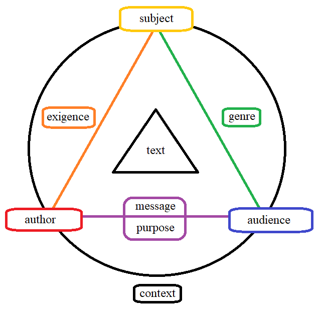

When we read a piece of writing, we can consider it alone, separate and apart. But even if we view something as apart, it nevertheless is a part of a greater whole. This greater whole, in the context of any text, is referred to as its rhetorical situation.
There are a number of elements to the rhetorical situation of any text. We shall consider them here. Every element is interconnected, so the questions you will ask when examining each of them may be similar to another, only mirrored in terms of perspective.
Any form of communication that humans create. The medium of communication itself is worthy to make note of, since a speech in front of an audience will come across differently than if it were published in a newspaper. Authors take this into account when writing, so in order to study their writing, you should too.
Ask:
All texts are created within the scope of their author's conscious understanding. When seeking to understand a text, the time, place, and any specific circumstances relating to its creation are of great importance.
Ask:
Just as frequently referred to as the writer, the creator of a text presents a perspective shaped by a number of factors. Their background, their thoughts on the subject, as well as whether they have skin in the game (i.e. whether they have something to gain from presenting a particular perspective), should all be taken into account when studying a source.
Ask:
The indended audience of a text. An author might write very differently, depending on their chosen audience. And, the author has chosen their audience for a reason. Understanding this reason will be key to gaining an understaning of the text.
Ask:
What the text is about.
Ask:
The exigence is what inspired the writer to produce the text. It could be anything - if the writer decided that a text was necessary, there must have been something which sparked or prompted that decision. Finding out, or even just speculating upon the exigence of the text can be a source of great insight when examining a rhetorical situation.
Ask:
The purpose is what the writer wishes the text to do. It encompases both what the writer hopes the text itself accomplishes (that it presents an argument well, or that it starts a conversation on a given subject), and what the writer hopes will be accomplished through the text.
Ask:
Whatever the text, to be worthy of study, it must include a central claim. The message of the text itself is the writer's claim, developed with reasoning and evidence. It is what the writer seeks to get through to the audience.
Ask:
What the audience expects from an author, when dealing with a specific subject matter.
Ask:
The elements of the rhetorical situation, and their relations between them, can be represented as a diagram:
Take your time to understand each element and how it relates to the others. It may seem complex at first glance, but with some practice, you'll find that you can apply it to any text quite easily.
Once you're armed with the words to describe the elements of the rhetorical situation, we can begin to analyze the choices authors have made when creating texts.
Onward to Analyzing the Rhetorical Situation.
Back to subject mainpage.